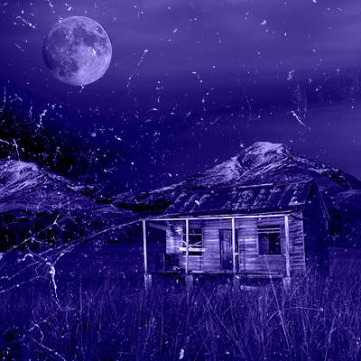
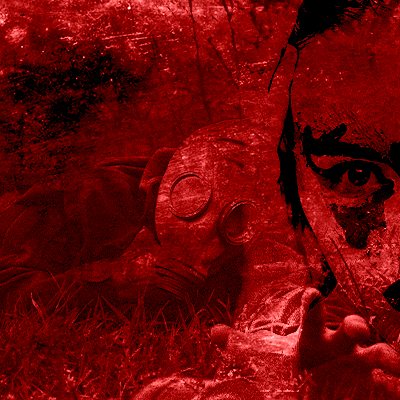
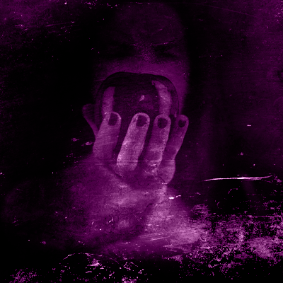
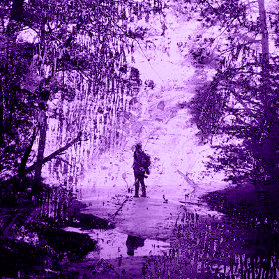
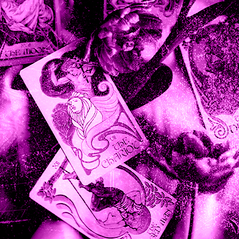
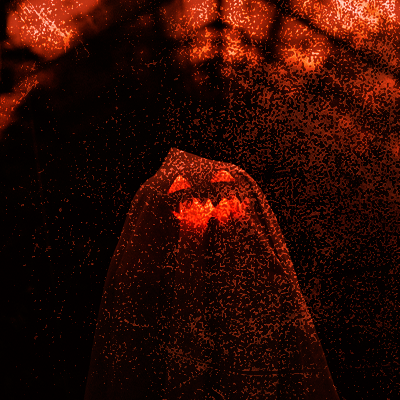
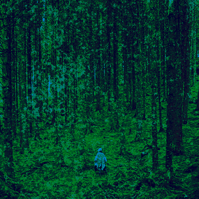
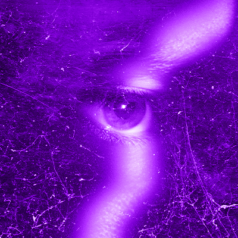
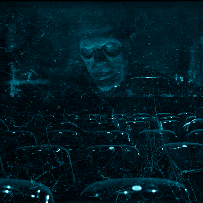
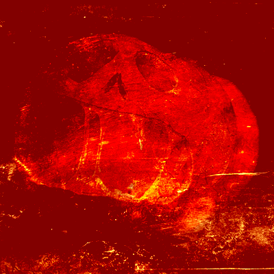

<aside class="fullwidth test">
  <div class="wrapper">
    <h2 class="test-title">Test de Halloween</h2>
    <form class="form" id="quizForm">
      <!-- Pregunta 1 -->
      <div class="pregunta" id="pregunta1">
        <div class="pregunta-imagen">
          
        </div>
        <div class="pregunta-inputs">
          <h3>1. ¿Cuál de estos escenarios prefieres para una noche oscura?</h3>
          <label><input type="radio" name="q1" value="1" onchange="verificarRespuesta()" />
            Un castillo gótico lleno de sombras y secretos</label>
          <label><input type="radio" name="q1" value="2" onchange="verificarRespuesta()" />
            Un laboratorio lleno de experimentos fallidos y vida
            artificial</label>
          <label><input type="radio" name="q1" value="3" onchange="verificarRespuesta()" />
            Una casa antigua embrujada con espejos rotos y pasillos
            vacíos</label>
          <label><input type="radio" name="q1" value="4" onchange="verificarRespuesta()" />
            Un bosque denso bajo la luz de la luna, donde acechan criaturas
            salvajes</label>
        </div>
      </div>

      <!-- Pregunta 2 -->
      <div class="pregunta" id="pregunta2" style="display: none">
        <div class="pregunta-imagen">
          
        </div>
        <div class="pregunta-inputs">
          <h3>2. ¿Cómo reaccionas ante el peligro?</h3>
          <label><input type="radio" name="q2" value="1" onchange="verificarRespuesta()" />
            Mantienes la calma y controlas la situación con una sonrisa siniestra</label>
          <label><input type="radio" name="q2" value="2" onchange="verificarRespuesta()" />
            Te retiras para analizar el problema y encontrar una solución metódica</label>
          <label><input type="radio" name="q2" value="3" onchange="verificarRespuesta()" />
            Utilizas el miedo de los demás para manipularlos en tu favor</label>
          <label><input type="radio" name="q2" value="4" onchange="verificarRespuesta()" />
            Te lanzas al ataque sin pensarlo, guiado/a por tus instintos más básicos</label>
        </div>
      </div>


      <!-- Pregunta 3 -->
      <div class="pregunta" id="pregunta3" style="display: none">
        <div class="pregunta-imagen">
          
        </div>
        <div class="pregunta-inputs">
          <h3>3. ¿Qué tipo de poder te atrae más?</h3>
          <label><input type="radio" name="q3" value="1" onchange="verificarRespuesta()" />
            La inmortalidad y el poder sobre la mente de otros</label>
          <label><input type="radio" name="q3" value="2" onchange="verificarRespuesta()" />
            La capacidad de crear vida y desafiar las leyes de la naturaleza</label>
          <label><input type="radio" name="q3" value="3" onchange="verificarRespuesta()" />
            La habilidad de aparecer y desaparecer, desorientando a los demás</label>
          <label><input type="radio" name="q3" value="4" onchange="verificarRespuesta()" />
            Fuerza incontrolable y transformación física</label>
        </div>
      </div>

      <!-- Pregunta 4 -->
      <div class="pregunta" id="pregunta4" style="display: none">
        <div class="pregunta-imagen">
          
        </div>
        <div class="pregunta-inputs">
          <h3>4. ¿Qué te inspira más miedo?</h3>
          <label><input type="radio" name="q4" value="1" onchange="verificarRespuesta()" />
            Estar solo/a por la eternidad sin poder cambiar tu destino</label>
          <label><input type="radio" name="q4" value="2" onchange="verificarRespuesta()" />
            Que tus creaciones o actos te traicionen</label>
          <label><input type="radio" name="q4" value="3" onchange="verificarRespuesta()" />
            Perder tu esencia y quedar atrapado/a entre dos mundos</label>
          <label><input type="radio" name="q4" value="4" onchange="verificarRespuesta()" />
            Perder el control y convertirte en un monstruo</label>
        </div>
      </div>


      <!-- Pregunta 5 -->
      <div class="pregunta" id="pregunta5" style="display: none">
        <div class="pregunta-imagen">
          
        </div>
        <div class="pregunta-inputs">
          <h3>5. ¿Qué tipo de compañía prefieres?</h3>
          <label><input type="radio" name="q5" value="1" onchange="verificarRespuesta()" />
            Personas sofisticadas que puedan seguir tu nivel de intelecto y encanto</label>
          <label><input type="radio" name="q5" value="2" onchange="verificarRespuesta()" />
            Seres que compartan tu pasión por la ciencia o la creación</label>
          <label><input type="radio" name="q5" value="3" onchange="verificarRespuesta()" />
            Espíritus y seres de otras dimensiones, invisibles pero siempre presentes</label>
          <label><input type="radio" name="q5" value="4" onchange="verificarRespuesta()" />
            Criaturas salvajes que comparten tu hambre por la libertad y la aventura</label>
        </div>
      </div>

      <!-- Pregunta 6 -->
      <div class="pregunta" id="pregunta6" style="display: none">
        <div class="pregunta-imagen">
          
        </div>
        <div class="pregunta-inputs">
          <h3>6. ¿Cómo te describen tus amigos?</h3>
          <label><input type="radio" name="q6" value="1" onchange="verificarRespuesta()" />
            Elegante, calculador/a y siempre con un plan</label>
          <label><input type="radio" name="q6" value="2" onchange="verificarRespuesta()" />
            Visionario/a, obsesivo/a y a veces distante</label>
          <label><input type="radio" name="q6" value="3" onchange="verificarRespuesta()" />
            Misterioso/a, difícil de entender, pero carismático/a</label>
          <label><input type="radio" name="q6" value="4" onchange="verificarRespuesta()" />
            Salvaje, impredecible y apasionado/a</label>
        </div>
      </div>

      <!-- Pregunta 7 -->
      <div class="pregunta" id="pregunta7" style="display: none">
        <div class="pregunta-imagen">
          
        </div>
        <div class="pregunta-inputs">
          <h3>7. ¿Cómo prefieres pasar una noche en Halloween?</h3>
          <label><input type="radio" name="q7" value="1" onchange="verificarRespuesta()" />
            Acechando en las sombras, observando a todos sin ser visto/a</label>
          <label><input type="radio" name="q7" value="2" onchange="verificarRespuesta()" />
            Realizando experimentos o creando algo nuevo que sorprenda a todos</label>
          <label><input type="radio" name="q7" value="3" onchange="verificarRespuesta()" />
            Jugando con los miedos y haciendo que la gente se sienta observada sin saber por qué</label>
          <label><input type="radio" name="q7" value="4" onchange="verificarRespuesta()" />
            Corriendo bajo la luna llena, sintiendo la libertad de la naturaleza</label>
        </div>
      </div>


      <!-- Pregunta 8 -->
      <div class="pregunta" id="pregunta8" style="display: none">
        <div class="pregunta-imagen">
          
        </div>
        <div class="pregunta-inputs">
          <h3>8. ¿Qué tipo de entorno te hace sentir más cómodo/a?</h3>
          <label><input type="radio" name="q8" value="1" onchange="verificarRespuesta()" />
            Un castillo o mansión oscura donde puedas controlar todo lo que ocurre</label>
          <label><input type="radio" name="q8" value="2" onchange="verificarRespuesta()" />
            Un laboratorio o taller donde puedas concentrarte en tus proyectos</label>
          <label><input type="radio" name="q8" value="3" onchange="verificarRespuesta()" />
            Un lugar lleno de misterio y actividad paranormal, con secretos en cada esquina</label>
          <label><input type="radio" name="q8" value="4" onchange="verificarRespuesta()" />
            Un bosque o lugar salvaje donde puedas moverte sin restricciones</label>
        </div>
      </div>


      <!-- Pregunta 9 -->
      <div class="pregunta" id="pregunta9" style="display: none">
        <div class="pregunta-imagen">
          
        </div>
        <div class="pregunta-inputs">
          <h3>9. ¿Qué tipo de películas disfrutas más?</h3>
          <label><input type="radio" name="q9" value="1" onchange="verificarRespuesta()" />
            Terror gótico con personajes encantadores y trágicos</label>
          <label><input type="radio" name="q9" value="2" onchange="verificarRespuesta()" />
            Ciencia ficción con elementos de horror</label>
          <label><input type="radio" name="q9" value="3" onchange="verificarRespuesta()" />
            Historias de fantasmas o mundos paralelos</label>
          <label><input type="radio" name="q9" value="4" onchange="verificarRespuesta()" />
            Historias de bestias indomables y criaturas salvajes</label>
        </div>
      </div>


      <!-- Pregunta 10 -->
      <div class="pregunta" id="pregunta10" style="display: none">
        <div class="pregunta-imagen">
          
        </div>
        <div class="pregunta-inputs">
          <h3>10. ¿Cómo disfrutas más de Halloween?</h3>
          <label><input type="radio" name="q10" value="1" onchange="verificarRespuesta()" />
            Seduciendo a la multitud con tu presencia oscura y magnética</label>
          <label><input type="radio" name="q10" value="2" onchange="verificarRespuesta()" />
            Sorprendiendo a todos con algo que nunca han visto antes</label>
          <label><input type="radio" name="q10" value="3" onchange="verificarRespuesta()" />
            Apareciendo de repente y dejando un rastro de misterio a tu paso</label>
          <label><input type="radio" name="q10" value="4" onchange="verificarRespuesta()" />
            Desatando el caos, dejando que tus instintos tomen el control</label>
        </div>
      </div>


      <div class="buttons">
        <button type="button" id="btnSiguiente" onclick="mostrarSiguientePregunta()" disabled>
          Siguiente
        </button>
        <button type="button" id="btnFinalizar" style="display: none" onclick="calcularResultado()" disabled>
          Finalizar
        </button>
      </div>
    </form>

    <div class="resultado" id="resultado-container" style="display: none">
      <div id="resultado" style="margin-top: 20px">
      </div>
      <div class="buttons">
        <button type="button" id="btnReiniciar" onclick="reiniciarTest()">
          Reiniciar Test
        </button>
      </div>
    </div>
  </div>
</aside>


<script src="./js/test.js"></script>